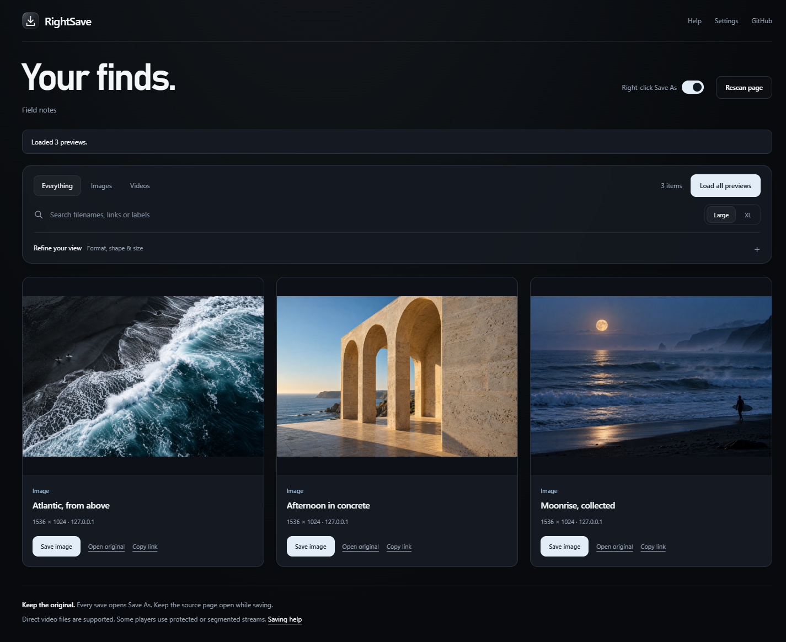

That image you wanted to keep.
Right-click a photo or direct video, choose a folder, and save it. Browse a page’s media in a gallery with large previews, useful filters and a keyboard-friendly viewer.

Free. Local. Yours to save.
Individual saves are unlimited, with no account required. Filter by format, shape and size, hide repeated links, or save an SVG, canvas image or video frame. RightSave can also find media details already loaded by supported social sites.
Protected playback and segmented streams cannot be combined. Some media needs a login or expires. Use files with the permission their owner requires.
Store status
Chrome and Firefox store submissions are being prepared. Until verified store links are published, use the local installation guide. Firefox’s temporary add-on lasts until the browser restarts.